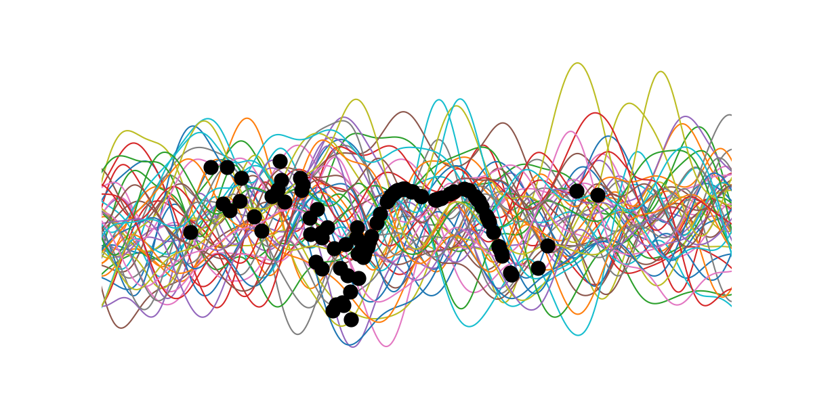

Learning Probabilistic Transition Dynamics Models
Aidan Scannell
Created: 2020-02-17 Mon 15:04
Gaussian Processes
Definition: A Gaussian process is a collection of random variables, any finite number of which have a joint Gaussian distribution.
A Gaussian process is completely specified by its mean function \(m(\mathbf{x})\) and its covariance function \(k(\mathbf{x}, \mathbf{x}')\),
\begin{align}
m(\mathbf{x}) &= \mathbb{E}[f(\mathbf{x})], \\
k(\mathbf{x}, \mathbf{x}') &= \mathbb{E}[(f(\mathbf{x}) - m(\mathbf{x}))(f(\mathbf{x}') - m(\mathbf{x}'))].
\end{align}
and we can write the Gaussian process as,
\[f(\mathbf{x}) \sim \mathcal{GP}(m(\mathbf{x}), k(\mathbf{x}, \mathbf{x}')).\]
Prior

Add Data

Condition GP Prior on Data

GP Posterior

Uncertainty in Machine Learning

Aleatoric Uncertainty